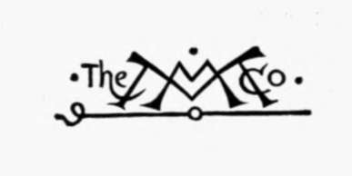

Character Of Renaissance Architecture | by Charles Herbert Moore
In the following attempt to set forth the true character of the architecture of the Renaissance I have endeavoured to reduce mere descriptions of buildings to a minimum, and to give graphic illustrations enough to make the discussions clear.
| Title | Character Of Renaissance Architecture |
| Author | Charles Herbert Moore |
| Publisher | The Macmillan Company |
| Year | 1905 |
| Copyright | 1905, The Macmillan Company |
| Amazon | Character of Renaissance Architecture |
By Charles Herbert Moore, Author of "Dvelopment and Character of Gothic Architecture"
With Twelve Plates In Photogravure And One Hundred And Thirty-Nine Illustrations In The Text
The Macmillan Company
To My Daughter, E. H. M
 Preface
Preface- The illustrations in the text are mainly from my own drawings, for the most part from photographs: but in a few cases I have reproduced woodcuts from the works of old writers, indicating, in each case...
- Chapter I. Introduction
- The great change in ideas and ideals which, after the remarkable intellectual and artistic life of the Middle Ages, was manifested in the so-called Renaissance, is not always correctly conceived or fa...
- Introduction. Part 2
- In a corresponding spirit the architect now set himself to the task of producing a luxurious and specious style of palatial architecture, drawing his inspiration from the monuments of imperial Rome, a...
- Introduction. Part 3
- In surveying the history of architectural design with attention to its fundamental principles we shall find that there have thus far existed in Europe but three entirely consistent and distinctive sty...
- Chapter II. The Dome Of Florence
- The great dome of the cathedral of Florence marks the beginning of the Renaissance movement in architecture, though in its general form and structural character it has no likeness to ancient domes, an...
- The Dome Of Florence. Part 2
- Such were the models of mediaeval dome building accessible to Brunelleschi when he was forming his great scheme for the covering of the octagon of the cathedral of Florence. But the idea of a low dome...
- The Dome Of Florence. Part 3
- Sieno fatti ventiquattro sproni, che otto ne sieno negli angoli e sedici nelle fac-cie: ciascuno sprone negli angoli grosso dappie braccia sette. Dalla parte di dentro, e di fuori, nel mezzo di dett...
- The Dome Of Florence. Part 4
- The whole scheme of this dome was a daring innovation of one man, and in this it differs from former architectural innovations, which were the comparatively slow outcome of corporate endeavour, progre...
- The Dome Of Florence. Part 5
- It may be thought that the object which Brunelleschi had in view, of producing a vast dome that should be an imposing feature of the cathedral externally, justifies the unsound method of construction ...
- Chapter III. Church Architecture Of The Florentine Renaissance
- No other work by Brunelleschi is comparable in merit to the great dome of the cathedral. None of his other opportunities were such as to call forth his best powers, which appear to have required great...
- Church Architecture Of The Florentine Renaissance. Part 2
- In the portico (Fig. 13) the incongruities of design are of a still graver nature because they involve weakness of construction. The order of the interior is, as we have just seen, but a simulated ord...
- Church Architecture Of The Florentine Renaissance. Part 3
- The church of Santo Spirito, built after the architect's death, closely resembles San Lorenzo in its architectural character, though it is larger in scale. The entablature blocks occur in the arcades ...
- Church Architecture Of The Florentine Renaissance. Part 4
- The front of Santa Maria Novella is notable as the first mediaeval one which was worked over by a Renaissance architect, and as a whole, notwithstanding that it is a patchwork of incongruous elements,...
- Church Architecture Of The Florentine Renaissance. Part 5
- In St. Andrea at Mantua the use of pilasters instead of columns, and the absence of ressauts in the great order, as well as the substitution of a pediment for the attic, make a great difference in the...
- Chapter IV. The Dome Of St. Peter's
- When in the year 1503 Pope Julius II came to the papal chair, the architect Bramante had recently settled in Rome. Born in Urbino, he had spent his early manhood in the North of Italy, where he had co...
- The Dome Of St. Peter's. Part 2
- In seeking guidance from the antique two monuments in particular appear to have appealed to him as offering appropriate suggestions, the Pantheon and the Basilica of Maxentius, then called the Temple ...
- The Dome Of St. Peter's. Part 3
- As for Bramante's intended architectural treatment of the rest of the building we have, as before remarked, no precise information. It appears, however, most probable that he meant to cover the arms o...
- The Dome Of St. Peter's. Part 4
- This vast dome is an imposing object, but it is nevertheless a monument of structural error. Not only does its form and construction render it much less secure than Brunelleschi's dome, but its suppor...
- The Dome Of St. Peter's. Part 5
- The dome of St. Peter's (Plate III) was conceived in a grandiose spirit, which, while it drew inspiration in part from the ancient Roman source, recklessly disregarded the lessons which Roman art shou...
- Chapter V. Church Architecture Of The Roman Renaissance
- As for the rest of the church of St. Peter, we need give attention to that part only which was designed by Michael Angelo on the basis of the original scheme of Bramante, namely, all to the eastward o...
- Church Architecture Of The Roman Renaissance. Part 2
- Such is St. Peter's church, which, though it has been much criticised, has been more generally lauded as a model of architectural greatness. Its real character has rarely been analyzed or rationally c...
- Church Architecture Of The Roman Renaissance. Part 3
- The church of Sant' Agostino is spoken of as a building of the early Roman Renaissance, and is said to have been built by the architect Giacomo da Pietra Santa between 1471 and 1484. But it is incredi...
- Church Architecture Of The Roman Renaissance. Part 4
- The use of pilasters on the angles makes the awkward combination of a pilaster coupled with a column necessary, and since the entablature is in the plane of the wall, it has to be broken into very sal...
- Church Architecture Of The Roman Renaissance. Part 5
- The lantern with which this tower is crowned is an adaptation of Brunelleschi's lantern on the dome of the cathedral, but made more aspiring in form, so that the general outline is like that of a Goth...
- Church Architecture Of The Roman Renaissance. Part 6
- On reflection we discover that the scheme suggests a derivation from the Pantheon. Not only is the dome shaped and of Corinthian pilasters surmounted by a classic pediment, and the entablature of the ...
- Church Architecture Of The Roman Renaissance. Part 7
- The Gesu in Rome, another large church by Vignola, and built at about the same time as Santa Maria degli Angeli, is a variation of the same scheme, and shows in a more marked degree the influence of S...
- Church Architecture Of The Roman Renaissance. Part 8
- Palladio was the first architect of the Renaissance who was not at any time either a painter or a sculptor. He begins his well-known book1 as follows : Guided by natural inclination, I began in my e...
- Church Architecture Of The Roman Renaissance. Part 9
- The scheme of the Redentore differs from that of San Giorgio. It has no transept and no aisles, but in the place of aisles a series of side chapels. A square area in front of the sanctuary is covered ...
- Chapter VI. Palace Architecture Of The Florentine Renaissance
- While it was in church edifices that the neo-classic ideas in architecture were first embodied, it was in vast palatial houses that they were most extensively carried out. Early in the fifteenth centu...
- Palace Architecture Of The Florentine Renaissance. Continued
- The spacious apartments of these early Florentine palaces are generally fine in their proportions and simple in their architectural treatment. They are, however, rarely well lighted. The ceilings are ...
- Chapter VII. Palace Architecture Of The Roman Renaissance
- Among the first of the great Roman palatial houses of the Renaissance is the so-called Cancelleria, which together with the Palazzo Girand Torlonia of similar design, has been attributed to Bramante. ...
- Palace Architecture Of The Roman Renaissance. Part 2
- The fagade of the Palazzo Farnese, by Antonio da San Gallo the younger, the grandest of these Roman palaces, again has its wall surfaces unencumbered with orders. The basement is comparatively low, an...
- Palace Architecture Of The Roman Renaissance. Part 3
- After the early part of the sixteenth century Italy, as before remarked, produced few architects of a high order of genius. The later architecture of the Renaissance is the work of men of little genui...
- Palace Architecture Of The Roman Renaissance. Part 4
- The order is made lower and the attic higher. The Arch of Titus is the finest in proportions of all the Roman triumphal arches, and the grandest in monumental simplicity. Sansovino's changes and ornam...
- Palace Architecture Of The Roman Renaissance. Part 5
- Of the secular architecture of Vignola the Palazzo Caprarola, in the hill country between Rome and Viterbo, is the most important. This building, says Milizia, is without doubt the grandest and the ...
- Palace Architecture Of The Roman Renaissance. Part 6
- From a structural point of view Palladio's scheme is an improvement on that of Padua. For in Padua, as in Vicenza, both stories of the portico are vaulted, and the slender columns which alone bear the...
- Chapter VIII. Church Architecture Of The Renaissance In North Italy
- While the architecture of the Italian Renaissance assumed the two principal phases that are broadly classified as Florentine and Roman, from the localities in which the conditions and influences that ...
- Church Architecture Of The Renaissance In North Italy. Part 2
- A characteristic early example of this Northern Renaissance design in its most florid form is the well-known fagade of the church of the Certosa of Pavia, dating from the close of the fifteenth centur...
- Church Architecture Of The Renaissance In North Italy. Part 3
- The design is attributed to Bramante,1 and it has features that lend support to belief in this authorship. The encircling arcade at the top suggests the encircling colonnade of the same architect's su...
- Church Architecture Of The Renaissance In North Italy. Part 4
- The ornaments of these openings are composed in a manner which appears to be peculiar to this region. The portal. (Fig. 82) of the south side, for instance, has the mediaeval scheme of a shafted round...
- Church Architecture Of The Renaissance In North Italy. Part 5
- The church of San Salvatore, dating from the close of the fifteenth century, and attributed to the architect Tullio Lombardo, though begun by Spavento,1 has a modified Byzantine structural scheme appl...
- Chapter IX. Palace Architecture Of The Renaissance In North Italy
- The palace architecture of the Renaissance in north Italy which has the most marked local character is that of Venice. We have already, in the preceding chapter, noticed several buildings here by Sans...
- Palace Architecture Of The Renaissance In North Italy. Part 2
- The fagade of the Scuola di San Marco, begun in 1485 and attributed to the architect Martino Lombardo, is a marvel of delicate workmanship resembling in many of its features the small church of the Mi...
- Palace Architecture Of The Renaissance In North Italy. Part 3
- The Palazzo Corner-Spinelli (Plate VII), attributed to Pietro Lombardo, is one of the most characteristic. Its broad-walled basement, and the well-ordered subdivisions of the upper stories, are exceed...
- Palace Architecture Of The Renaissance In North Italy. Part 4
- Among examples of north Italian Renaissance palace architecture outside of Venice the well-known Palazzo del Consiglio of Verona (Plate VIII) presents a mediaeval broletto scheme dressed out in Renais...
- Chapter X. Architectural Carving Of The Renaissance
- All effective sculpture on buildings, including that of the human figure, is architectural carving; but it is in Gothic art only that sculpture of the human figure, as well as that of subordinate orna...
- Architectural Carving Of The Renaissance. Continued
- It is a fundamental weakness of this style of ornamentation that it is so largely made up of artificial convolutions and formal symmetries. Reduced to its linear elements, it mainly consists either of...
- Chapter XI. Architecture Of The Early Renaissance In France
- On the north of the Alps the Renaissance had not the same meaning that it had in Italy, and in France, where its influence was first felt, the art naturally assumed a different character. The term R...
- Architecture Of The Early Renaissance In France. Part 2
- In cases where the chateau was a wholly new building, it was generally placed on even ground, and the plan became symmetrical. Yet still the outline remained broken with the steep gables, chimneys, an...
- Architecture Of The Early Renaissance In France. Part 3
- Rideau, and of similar character, are Chenonceaux and La Rochefoucauld. Of Chenonceaux the portal (Fig. 114) is worthy of notice as an instance of a different manifestation of the survival of Flamboya...
- Architecture Of The Early Renaissance In France. Part 4
- The walls of Chambord, the next vast chateau of the early French Renaissance, are adorned with pilasters as at Blois, though the design below the cornice is much simpler. Above the cornice, however, i...
- Chapter XII. Lescot And De L'Orme
- Among the architects of the later French Renaissance Pierre Lescot and Philibert De l'Orme were preeminent. The change which they effected gave the French architecture a more marked neo-classic dress,...
- Lescot And De L'Orme. Part 2
- In this design (Fig. 118) there is no survival of the character of a mediaeval stronghold, though the rectangular pavilions, which break the long facades, and the high pitched roofs are feeble echoes ...
- Lescot And De L'Orme. Part 3
- The external fagade (Fig. 120) has a single story with an attic of broken outline, and in it the architect made use of a peculiar form of Ionic column of which he speaks1 as follows : I make here a ...
- Lescot And De L'Orme. Part 4
- As for De l'Orme's fagade for the Tuileries, as an architectural composition, little in the way of praise can, I think, be said. The basement arcade (Fig. 120, p. 202) is but an adaptation of the wear...
- Lescot And De L'Orme. Part 5
- It is not worth while to follow this phase of the French Renaissance art much further, but Du Cerceau gives one other design that is worthy of a moment's attention for its freakish irrationality and, ...
- Chapter XIII. Architecture Of The Renaissance In England. I. Elizabethan Art
- When the need for feudal strongholds had passed, and the conditions of life in the open country had become peaceful, a type of domestic architecture arose in England which assumed its most characteris...
- Renaissance In England. Part 2
- The general scheme has no English character, and it so nearly resembles that of the court of Charleval, in France, (cf. p. 212) as to suggest that its designer may have been influenced by the French c...
- Renaissance In England. Part 3
- The gatehouse at Tixall1 has a plain front of three stories with a projecting bay over the portal, and angle towers. The window openings are all of the broad mullioned Elizabethan type, and the fagade...
- Chapter XIV. Architecture Of The Renaissance In England. II. Jones And Wren
- It is only by extension of the term that the architecture of England in the seventeenth century may be properly called Renaissance. But if, in architecture, we understand by Renaissance a revival of t...
- Jones And Wren. Part 2
- Every form and feature of the native art is eliminated. The Elizabethan house, however overlaid with foreign elements, was English in its primary forms and expression. But here Inigo Jones swept away ...
- Jones And Wren. Part 3
- The art of Inigo Jones has been thoughtlessly lauded in more recent times. His special strength, says Mr. Bloom-field, his latest panegyrist, lay in his thorough mastery of proportion, his contemp...
- Jones And Wren. Part 4
- An entirely new structure was now decided on, and Wren was directed to contrive a Fabrick of moderate Bulk, but of good Proportions; a convenient Quire, with a Vestibule and Porticoes, and a Dome co...
- Jones And Wren. Part 5
- I think that had the first design been accepted Wren would not have carried it out without material modifications. For he was too good an engineer not to have seen that the form and adjustment of the ...
- Jones And Wren. Part 6
- This remarkable scheme embodies the last notable attempt to solve the great dome problem with which the architects of the Renaissance had struggled from the time of Brunelleschi. But the problem is in...
- Jones And Wren. Part 7
- Of the architectural treatment of the exterior as a whole little need be said further than that it has no relation to the real form of the building. The masking of the buttress system by the false wal...
- Chapter XV. Conclusion
- I think it must be clear, in the light of the foregoing considerations, that the architecture of the Renaissance is an art without consistent principles. We have seen that it assumed a great variety o...
- Appendix. Condition Of The Dome Of St. Peter's
- The mathematicians, after describing the dome and its supports, make the following statement of the condition in which they found it:1 — 1. La base esteriore A del tamburo si vede piena di spaccatu...
- Development And Character Of Gothic Architecture
- By Charles Herbert Moore Second Edition, Rewritten and Enlarged. With Ten Plates in Photogravure and more than 200 Illustrations in the Text 8vo. Cloth. $4.50, net The new edition embodies a ...
- European Architecture - A Historical Study
- By Russell Sturgis, A.M., Ph.D., F.A.I.A. President of the Fine Arts Federation of Neiv York; Post-President of tbe Architectural League of New York; Pice-President of tbe National Sculpture Soc...
- A Dictionary Of Architecture And Building Biographical, Historical, And Descriptive
- By Russell Sturgis, A.M., Ph.D. Fellow of the American Institute of Architects And many Architects, Painters, Engineers, and other expert Writers, American and Foreign In Three Octavo Volumes...